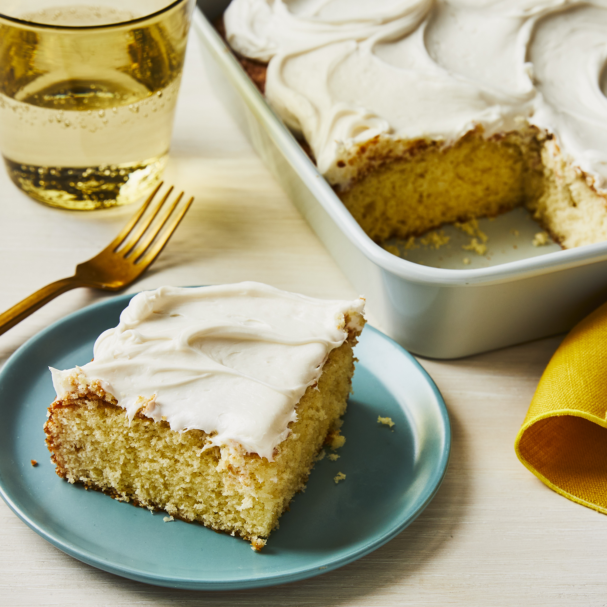

| Ingredients |
|---|
| 1 cup white sugar |
| ½ cup unsalted butter |
| 2 large eggs |
| 2 teaspoons vanilla extract |
| 1 ½ cups all-purpose flour |
| 1 ¾ teaspoons baking powder |
| ½ cup milk |
Step 1 Preheat the oven to 350 degrees F (175 degrees C). Grease and
flour a 9-inch square cake pan.
Step 2 Cream sugar and butter together in a mixing bowl. Add eggs,
one at a time, beating briefly after each addition. Mix in
vanilla.
Step 3 Combine flour and baking powder in a separate bowl. Add to
the wet ingredients and mix well. Add milk and stir until smooth.
Pour batter into the prepared cake pan.
Step 4 Bake in the preheated oven until the top springs back when
lightly touched, 30 to 40 minutes. Step 5 Remove from the oven and
cool completely.